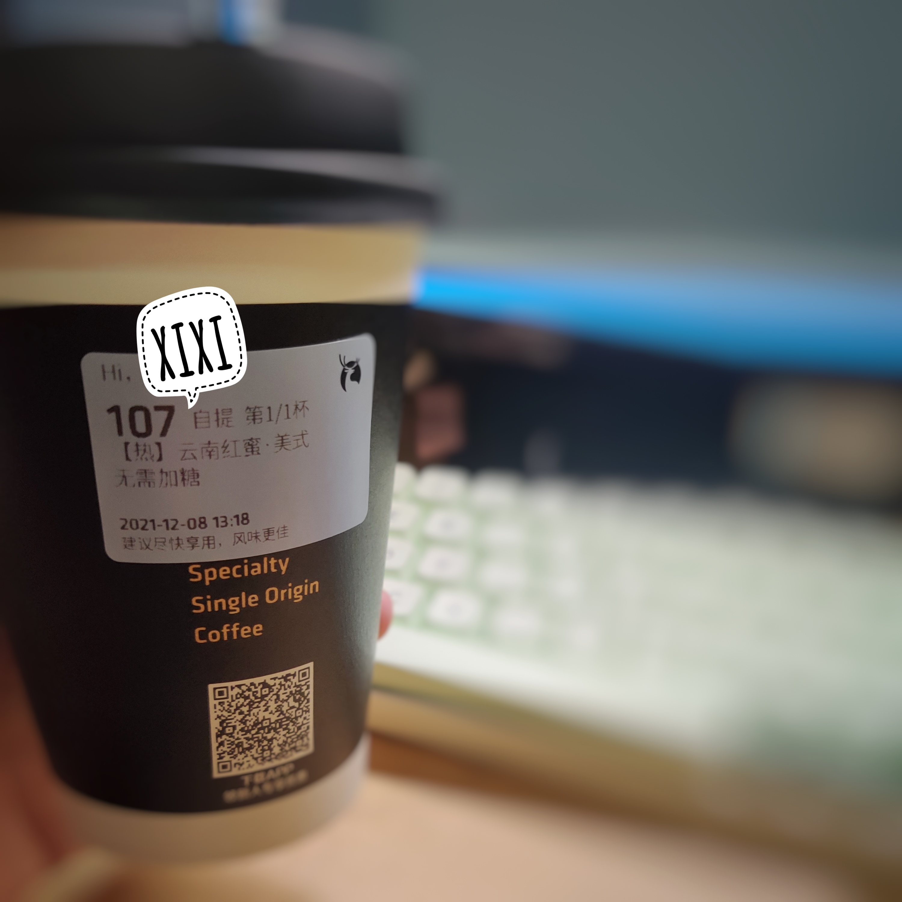

虽然对咖啡过敏（指喝了纯美式后可能会头晕，肠胃不适，精神被抑制在难受的状态），但是我还是很喜欢咖啡的。今天又点了一杯没喝过的咖啡想试试看。突然决定记录下来，写成一篇来自不专业人士的体验报告。
1.瑞幸 耶加雪菲美式 热 无糖 ⭐⭐
所谓的SOE咖啡，Single Origin Espresso，直接翻译过来即 “单一产地浓缩咖啡”。瑞幸SOE限定系列甄选全球知名精品产区——埃塞俄比亚耶加雪菲的咖啡豆，采用水洗法处理，果酸更加清澈明亮。
居然真的如咖啡简介所写，入口有橘子的酸，然后是涩的回甘，好涩，最后是咖啡香和涩混合在一起，慢慢消失在嘴里。
整体很怪，只比普通美式多了一份酸甘的味道。第一次喝会惊喜（或惊吓），很难把这种柑橘的苦涩和好喝联立在一起。个人感觉没有美式那么冲的咖啡香味，但是我可能更喜欢美式那种简简单单的感觉。小黑杯很好看，但是冷的也快，冬天一下子就凉了，凉了之后风味直线下降。
总结：值得一试，但是不好喝。或许你会喜欢，但是我不喜欢。（20211204）
2.瑞幸 冲绳黑糖拿铁 热 半糖 默认奶油⭐⭐
第一感觉：闻味道有点齁甜。喝了几口感觉还不错，甜度变得可以接受了。
入口没有咖啡的苦，但是有咖啡的香。刚开始有点腻，然后是浓厚的咖啡口感，就是普通的拿铁感觉，没有什么特别的。可以当作奶茶喝，感觉还不错。以后应该不会再点拿铁了。（20211205）
3.瑞幸 云南红蜜美式 热 无糖 ⭐⭐⭐
香，美式太香了。
苦，没有特色的苦，苦瓜？ 回味还是苦。
但是挺不错的，就喜欢这种感觉。但和之前的耶加雪菲比起来，没有特色，可能不如美式。
最后一口，有一丝丝酸，真不错。
缺点依旧是小黑杯太容易凉了，从滚烫到温开水只用了一俩分钟。（20211208）
4.海盐芝士厚乳拿铁 热 半糖⭐⭐⭐⭐
说好的再也不喝拿铁的呢！真香嘿嘿。
这款甜度还算能接受，主要喜欢吃咸的，咸甜味带点咖啡的回味真不错。（上次喝美式给我整到早上五六点还没睡着真的怕了）
厚乳拿铁也没有那么腻，可以接受，非常喜欢！应该属于可以随便推荐给朋友的那一种了嘿嘿。听wb朋友说海盐芝士鸳鸯拿铁更不错，可惜售罄，下次试试~
今天推荐Ed Sheeran 的Nina和BloodStream 真不错~（20211211）
5.瑞幸 花魁5.0Dirty⭐⭐⭐
完了我被诈骗了，说好的往热咖啡中加入冰牛奶的呢，我满脑子都是昨晚看到的鲁伯特之泪那样子的场景，结果拿到手是全凉的555
咖啡味也不浓郁，确实是喝出了从咖啡到牛奶的变化，但是热度变化相对于从凉变到了冰。你说这玩意，炫是挺炫，但是有什么好喝的呢，喝到最后也就是咖啡味的奶了。不过奶还是很顺滑的，个人决定除非你想用十多块买杯咖味奶，不然还是买拿铁或者美式吧。
今天还贼冷，下次还是直接买冰美式了欸。555
不过今天和喜欢的女孩子聊天了好开心嘿嘿嘿原谅你。
还有巧克力味曲奇还不错，可以试试看（2022年1月5日晚）